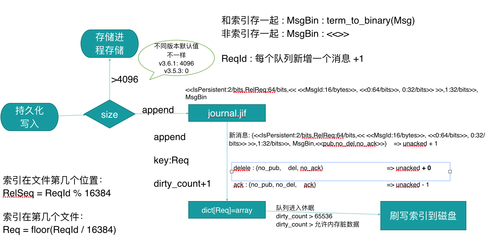
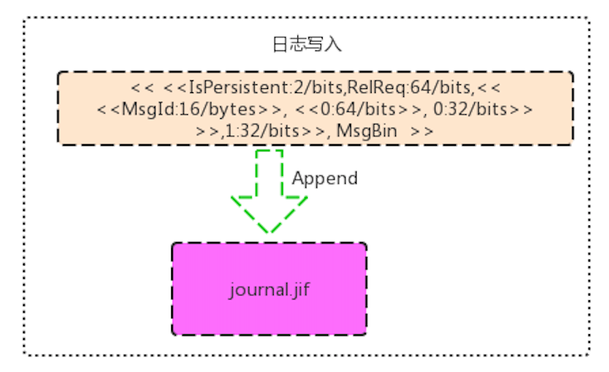

消息消费
在最开始接触RabbitMQ的时候,我都认为RabbitMQ是后台有一个线程一直在阻塞循环拿到消息,然后再推送给我们的消费端.
其实看了源码后才发现和我最开始想的是完全不一样。
Erlang是典型的Actor模型.==每个队列一个Erlang的process.==
==一个队列在理论就一个队列的数据处理是单线程处理的.==
Actor模式的话,可能对于一些写nodeJS,python甚至用php里的swoole,workman及一些喜欢开进程而不开线程的C的开发人员来说 可能会更容易理解一点.
如果对Actor模型没有了解的人,可能对这一个线程怎么处理 写入消费,消费消息 会有疑惑. 下面我们就来讲讲RabbitMQ消费者在消费数据的过程,rabbitmq-server后台是怎么处理的
消费过程

1. 当客户端连接到rabbitmq-server,并且获取到一个新的channel 通道.
2. 客户端拿到通道通过发往服务端发送Consume消费数据的指令.
3. Channel进程拿到消费数据消费数据的指令的时候,往队列进程发送一条有新的消费者需要消费数据
4. 队列进程拿到通道进程推送过来的消费者后，把当前消费者信息把到当前队列进程的一个List里
队列进程回调消费者注册的代码如下:
%% 处理队列进程中增加消费者的消息
handle_call({basic_consume, NoAck, ChPid, LimiterPid, LimiterActive,
PrefetchCount, ConsumerTag, ExclusiveConsume, Args, OkMsg},
_From, State = #q{consumers = Consumers,
exclusive_consumer = Holder}) ->
%% 检查当前队列的独有消费者的正确性
case check_exclusive_access(Holder, ExclusiveConsume, State) of
in_use -> reply({error, exclusive_consume_unavailable}, State);
ok -> %% 向消费者字段中添加消费者
Consumers1 = rabbit_queue_consumers:add(
ChPid, ConsumerTag, NoAck,
LimiterPid, LimiterActive,
PrefetchCount, Args, is_empty(State),
Consumers),
%% 如果当前消费者是当前消息队列的独有消费者，则记录在exclusive_consumer字段
ExclusiveConsumer =
if ExclusiveConsume -> {ChPid, ConsumerTag};
true -> Holder
end,
%% 消费者添加成功后，更新队列中的consumers字段
State1 = State#q{consumers = Consumers1,
has_had_consumers = true,
exclusive_consumer = ExclusiveConsumer},
%% 将消费者成功加入到队列中后，如果需要通知客户端成功的消息，则通过rabbit_channel进程再通过rabbit_writer进程通知客户端
ok = maybe_send_reply(ChPid, OkMsg),
%% 通知rabbit_event当前队列有新的消费者创建
emit_consumer_created(ChPid, ConsumerTag, ExclusiveConsume,
not NoAck, qname(State1),
PrefetchCount, Args, none),
%% 回调消息队列的修饰模块
notify_decorators(State1),
%% 当前队列有没有被锁住的消费者，同时队列中还有消息，则将消息一条条的下发给没有锁住的消费者
reply(ok, run_message_queue(State1))
end;
5. 当然每个消费者是有属性的,比如Exclusive属性 ,当前消费者是是不当前队列的独有消费者
6. 接下来如果就是如果需要的话,进行返回注册消费者成功的消息给客户端,这个是由队列进程返回给channel通道进程再通过rabbit_writer进程返回回去
7. 接下来就是运行 函数 run_message_queue.
源码如下:
run_message_queue(ActiveConsumersChanged, State) ->
case is_empty(State) of
%% 如果消息队列为空，则不继续向消费者发送消息
true -> maybe_notify_decorators(ActiveConsumersChanged, State);
false -> case rabbit_queue_consumers:deliver(
%% 从backing_queue模块中取得一个消息
fun(AckRequired) -> fetch(AckRequired, State) end,
qname(State), State#q.consumers) of
%% 传递成功后，继续将消息发送给消费者，如果成功则不断的往后发送直到没有消息或者没有满足条件的消费者
{delivered, ActiveConsumersChanged1, State1, Consumers} ->
run_message_queue(
ActiveConsumersChanged or ActiveConsumersChanged1,
State1#q{consumers = Consumers});
%% 传递失败后，则不再继续将消息发送给消费者
{undelivered, ActiveConsumersChanged1, Consumers} ->
maybe_notify_decorators(
ActiveConsumersChanged or ActiveConsumersChanged1,
State#q{consumers = Consumers})
end
end.
函数逻辑：
先获取消息一条,然后再去消费者队列找出一个 PrefetchCount 或者 PrefetchSize 还没有满的消费者出来,再进行投递.
==这里为什么一定是去找消费,而不是先找消费者呢?==
这是由于如果先找消费者,再去查消费的情况下,刚注册了一个消费者,那消费者肯定是可以找到的,但是消费不一定有呀.
如果没有找到消费者,那又得重新把消费者放回队列,无用功能更多.
先找消息的情况下,没找到消息就可以直接退出了。
也因为这样的逻辑,所以假如其他消费者 PrefetchCount 或者 PrefetchSize 设置得都 比较大的情况下,有些客户端默认是1000,有些是无限制的.
那这样就可能会造成 消费都 分配给了其他 消费者,但新注册的消费者没有受取到消息.
尤其是php那些单线程运行的进程.可能会造成开了多进程,消费速度也没有性能提升的假象. 这里请参考 后期 客户端 原理分析.
8. 客户端获取由服务端推送过来的消息进行处理后.
客户端可能有以下几种操作情况：
%% 处理rabbit_channel进程发送过来的处理消费者进行ack的消息
handle_cast({ack, AckTags, ChPid}, State) ->
noreply(ack(AckTags, ChPid, State));
%% 表示客户端拒绝的消息可以被重新分配
handle_cast({reject, true, AckTags, ChPid}, State) ->
noreply(requeue(AckTags, ChPid, State));
%% 表示客户端拒绝的消息不能够被重新分配
handle_cast({reject, false, AckTags, ChPid}, State) ->
noreply(with_dlx(
State#q.dlx,
%% 如果配置有重新将消息分配的exchange交换机，则将该消息重新发送到exchange中
fun (X) -> subtract_acks(ChPid, AckTags, State,
fun (State1) ->
%% 消费者拒绝接受的消息，同时配置为不能重新放入到队列中，则将该死亡消息根据参数配置的路由规则将该消息发布到参数配置的exchange交换机上
dead_letter_rejected_msgs(
AckTags, X, State1)
end) end,
%% 如果没有配置重新将消息分配的exchange交换机，则直接将消息ack后丢弃掉
fun () -> ack(AckTags, ChPid, State) end));
ack
这个操作是正常我们业务逻辑里的,对消费从服务端删除掉
nack
当参数为true的时候, 把消息返回来队列中
当参数为false的时候,消费进入死信逻辑
==不管ack不是nack哪一种模式,都会重新进行一次 run_message_queue 函数.重新获取一条消息再重新找到一个消费并且 进行投递==
==假如客户端在处理消息的时候,业务逻辑发现那条消息处理不了, 并且一直在采用nack(true)的模式,将数据原样返回队列的情况下, 不好意思.这样就有可能会进入死循环.==
所以这里对消费者逻辑代码严谨性还有要求的. 详细请参数 客户端 原理分析
小结
RabbitMQ的消费的时候,后台没有独立的线程进行一直在推送,而每次消费者连接上去的时候,会运行一次查消息的过程,并且在客户端进行ack或者nack操作的时候,再次进行查消息进行投递的过程.
大概如下图:
